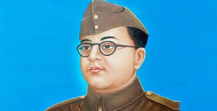
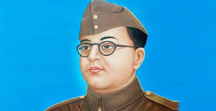

Subhash Chandra Bose
 

Subhash Chandra Bose (23 January 1897 – 18 August 1945) was an Indian nationalist whose defiance of British authority in India made him a hero among many Indians, but his wartime alliances with Nazi Germany and Imperial Japan left a legacy vexed by authoritarianism, anti-Semitism, and military failure. The honorific 'Netaji' (Hindustani: "Respected Leader") was first applied to Bose in Germany in early 1942—by the Indian soldiers of the Indische Legion and by the German and Indian officials in the Special Bureau for India in Berlin. It is now used throughout India.
Bose was born into wealth and privilege in a large Bengali Kayastha family in Orissa during the British Raj. The early recipient of an Anglo-centric education, he was sent after college to England to take the Indian Civil Service examination. He succeeded with distinction in the first exam but demurred at taking the routine final exam, citing nationalism as a higher calling. Returning to India in 1921, Bose joined the nationalist movement led by Mahatma Gandhi and the Indian National Congress. He followed Jawaharlal Nehru to leadership in a group within the Congress which was less keen on constitutional reform and more open to socialism.[i] Bose became Congress president in 1938. After reelection in 1939, differences arose between him and the Congress leaders, including Gandhi, over the future federation of British India and princely states, but also because discomfort had grown among the Congress leadership over Bose's negotiable attitude to non-violence, and his plans for greater powers for himself.[15] After the large majority of the Congress Working Committee members resigned in protest,[16] Bose resigned as president and was eventually ousted from the party.
In April 1941 Bose arrived in Nazi Germany, where the leadership offered unexpected but equivocal sympathy for India's independence.[19][20] German funds were employed to open a Free India Centre in Berlin. A 3,000-strong Free India Legion was recruited from among Indian POWs captured by Erwin Rommel's Afrika Korps to serve under Bose.[21][j] Although peripheral to their main goals, the Germans inconclusively considered a land invasion of India throughout 1941. By the spring of 1942, the German army was mired in Russia and Bose became keen to move to southeast Asia, where Japan had just won quick victories.[23] Adolf Hitler during his only meeting with Bose in late May 1942 agreed to arrange a submarine.[24] During this time, Bose became a father; his wife,[6][k] or companion,[25][l] Emilie Schenkl, gave birth to a baby girl.[6][m][19] Identifying strongly with the Axis powers, Bose boarded a German submarine in February 1943.[26][27] Off Madagascar, he was transferred to a Japanese submarine from which he disembarked in Japanese-held Sumatra in May 1943.